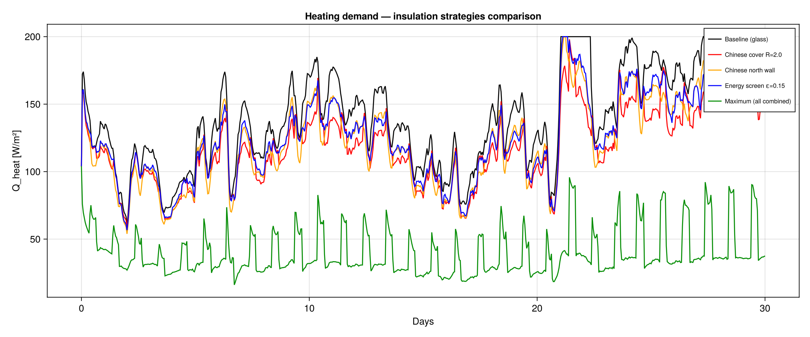

Tutorial: Insulation Strategies
GreenhousesJL provides three insulation mechanisms that can be combined to reduce heating consumption.
Night covers (Chinese-style movable blankets)
A movable insulating blanket deployed over the glass roof at night, common in Chinese solar greenhouses. It adds thermal resistance to the roof, blocking convective and radiative losses.
p = SavonaParams(tmy; with_walls=true, cover=ChineseCover())| Preset | R-value [m²·K/W] | Description |
|---|---|---|
NoCover() | 0 | Bare glass (default) |
ThinBlanket() | 0.5 | Polyester blanket |
ThickBlanket() | 1.5 | Quilted cotton |
ChineseCover() | 2.0 | Traditional straw mat + plastic |
InsulatedMat() | 3.0 | Foam + reflective layer |
The cover deploys automatically when I_glob < 10–15 W/m² (configurable).
Wall insulation
Replace glass walls with opaque insulated construction. Especially effective for the north wall (no solar gain lost).
p = SavonaParams(tmy; with_walls=true, walls=InsulatedNorthWall())| Preset | U-value [W/(m²·K)] | Coverage | Description |
|---|---|---|---|
NoInsulation() | 6.0 | 0% | All glass (default) |
InsulatedNorthWall() | 0.4 | 25% | Lean-to style |
ChineseNorthWall() | 0.3 | 30% | Massive earth/brick (thermal storage) |
PolycarbonateWalls() | 2.5 | 100% | Double polycarbonate |
FullyInsulatedWalls() | 0.5 | 100% | All walls opaque insulated |
Thermal screens
Horizontal retractable screen between canopy and cover. Standard in Dutch Venlo greenhouses.
p = SavonaParams(tmy; with_walls=true, screen=EnergyScreen())| Preset | Emissivity ε | Description | Typical savings |
|---|---|---|---|
NoScreen() | 1.0 | No screen | 0% |
StandardScreen() | 0.3 | Aluminised | ~8% |
EnergyScreen() | 0.15 | High-performance | ~10% |
BlackoutScreen() | 0.9 | Opaque (light control) | ~2% |
Combined strategies
Insulation mechanisms stack:
# Chinese solar greenhouse: night cover + massive north wall
p = SavonaParams(tmy; cover=ChineseCover(), walls=ChineseNorthWall())
# Dutch Venlo: energy screen + insulated north wall
p = SavonaParams(tmy; walls=InsulatedNorthWall(), screen=EnergyScreen())
# Maximum insulation
p = SavonaParams(tmy; cover=InsulatedMat(), walls=FullyInsulatedWalls(), screen=EnergyScreen())Results: heating savings (30 days, Savona 5×5m, Dec-Jan Brussels)

| Strategy | Energy [kWh/30d] | Saving |
|---|---|---|
| Baseline (all glass) | 2532 | 0% |
| Chinese cover R=2.0 | 2153 | 15% |
| Insulated mat R=3.0 | 1950 | 23% |
| All walls insulated | 1369 | 46% |
| Chinese full (cover+wall) | 1840 | 27% |
| Maximum (cover+walls+screen) | 711 | 72% |

The green curve (maximum insulation) shows dramatic heating reduction, especially at night when the cover is deployed and the screen blocks IR radiation.
Listing all presets
list_insulation_presets()